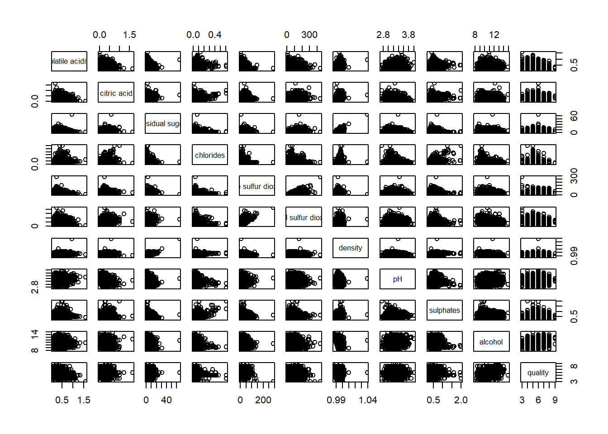

pacman::p_load(corrplot, ggstatsplot, tidyverse,ggpubr)Hands-on Exercise 5.2: Visual Correlation Analysis
1 Overview
The correlation coefficient is a widely used statistical measure that quantifies the type and strength of the relationship between two variables. The coefficient ranges from -1.0 to 1.0:
1.0 indicates a perfect positive linear relationship.
-1.0 indicates a perfect negative (inverse) linear relationship.
0.0 indicates no linear relationship between the variables.
When analyzing multivariate data, pairwise correlation coefficients are typically displayed in a structured format called a correlation matrix or scatterplot matrix.
There are three key reasons to computing a correlation matrix:
Understanding Relationships – Reveals pairwise relationships between high-dimensional variables.
Input for Further Analyses – Used in exploratory factor analysis, confirmatory factor analysis, structural equation modeling, and linear regression (especially when handling missing values pairwise).
Diagnostic Tool – Helps assess data relationships before conducting statistical modeling. For example, high correlations may indicate multicollinearity, which can make regression estimates unreliable.
When working with large datasets (many observations and variables), a Corrgram is useful for visually exploring correlations. A corrgram organizes data using two main principles:
Depicting correlation values – Uses color or shape to represent both sign and magnitude of correlations.
Reordering variables – Groups “similar” variables adjacently for better interpretability.
This exercise is divided into three key sections:
Creating a Correlation Matrix – Using the
pairs()function from R Graphics.Plotting a Corrgram – Using the
corrplotpackage.Building an Interactive Correlation Matrix – Using the
PlotlyR package.
2 Installing and Launching R Packages
The code chunk below to installs corrplot, ggpubr, ggstatsplot and tidyverse in RStudio.
3 Importing and Preparing The Data Set
For this exercise, the Wine Quality Data Set of UCI Machine Learning Repository will be used. The data set consists of 13 variables and 6497 observations, with the red wine and white wine data combined into one file. The combined fine is called wine_quality.csv.
3.1 Importing Data
First we import the data into R using read_csv() of readr package.
wine <- read_csv("data/wine_quality.csv")Note that beside quality and type, the rest of the variables are continuous numerical data type.
4 Building Correlation Matrix: pairs() method
There are multiple ways to create a scatterplot matrix in R. In this section, you will learn how to generate one using the pairs() function from the R Graphics package.
Before proceeding, it is recommended to review the syntax and functionality of the pairs() function to understand its various customization options.
4.1 Building a basic correlation matrix
The figure below shows the scatter plot matrix of Wine Quality Data.
pairs(wine[,1:11])
The pairs() function requires input in the form of a matrix or data frame. Creating a scatterplot matrix using this function is straightforward.
In the following code chunk, the pairs() function is applied to columns 2 to 12 of the wine data frame. These columns represent key variables such as fixed acidity, volatile acidity, citric acid, residual sugar, chlorides, free sulfur dioxide, total sulfur dioxide, density, pH, sulphates, and alcohol. The resulting scatterplot matrix helps visualize pairwise relationships among these variables.
pairs(wine[,2:12])
4.2 Drawing the lower corner
The pairs() function in R Graphics offers various customization options. One common practice is to display only the upper or lower half of the correlation matrix, rather than both, since the matrix is symmetric.
To visualize only the lower half of the correlation matrix, the upper.panel argument is used. The following code chunk demonstrates this approach, allowing for a cleaner and more interpretable scatterplot matrix.
pairs(wine[,2:12], upper.panel = NULL)
Similarly, we can display the upper half of the correlation matrix using the code chunk below.
pairs(wine[,2:12], lower.panel = NULL)
4.3 Including with correlation coefficients
To display the correlation coefficient for each pair of variables instead of scatterplots, the panel.cor function can be used. This function also scales the font size according to the magnitude of the correlation, making it easier to interpret higher correlations at a glance.
For now, simply enter the code into your R session or script and explore the results. Next, we’ll look at a more engaging way to visualize the correlation matrix.
panel.cor <- function(x, y, digits=2, prefix="", cex.cor, ...) {
usr <- par("usr")
on.exit(par(usr))
par(usr = c(0, 1, 0, 1))
r <- abs(cor(x, y, use="complete.obs"))
txt <- format(c(r, 0.123456789), digits=digits)[1]
txt <- paste(prefix, txt, sep="")
if(missing(cex.cor)) cex.cor <- 0.8/strwidth(txt)
text(0.5, 0.5, txt, cex = cex.cor * (1 + r) / 2)
}
pairs(wine[,2:12],
upper.panel = panel.cor)
5 Visualising Correlation Matrix: ggcormat()
A major limitation of traditional correlation matrices is that scatterplots can become overly cluttered when dealing with large datasets (e.g., more than 500 observations). To address this, the corrgram visualization technique—proposed by Murdoch & Chow (1996) and later refined by Friendly (2002)—offers a more structured way to explore correlation patterns.
Several R packages provide functions to create corrgrams, including:
Additionally, packages like ggstatsplot also offer functions for building corrgrams.
5.1 The basic plot
One key advantage of using ggcorrmat() from the ggstatsplot package is its ability to generate a comprehensive and professional statistical report alongside the correlation matrix, as illustrated in the example below.
ggcorrmat(
data = wine,
cor.vars = 1:11)
ggcorrmat(
data = wine,
cor.vars = 1:11,
ggcorrplot.args = list(outline.color = "black",
hc.order = TRUE,
tl.cex = 10),
title = "Correlogram for wine dataset",
subtitle = "Four pairs are no significant at p < 0.05"
)
Key takeaways from the above code Chunk
cor.vars: Specifies the variables used to compute the correlation matrix required for constructing the corrgram.ggcorrplot.args: Provides additional (mainly aesthetic) arguments passed toggcorrplot::ggcorrplot(). However, it should exclude certain arguments (corr,method,p.mat,sig.level,ggtheme,colors,lab,pch,legend.title, anddigits), as these are already internally handled.
The below sub-code chunk demonstrates how to fine-tune specific components of the plot, such as adjusting the font size for the x-axis, y-axis, and statistical report.
ggplot.component = list(
theme(text=element_text(size=5),
axis.text.x = element_text(size = 8),
axis.text.y = element_text(size = 8)))6 Building multiple plots
Since ggstasplot is an extension of ggplot2, it also supports faceting. The feature is available in the grouped_ggcorrmat() of ggstatsplot.
grouped_ggcorrmat(
data = wine,
cor.vars = 1:11,
grouping.var = type,
type = "robust",
p.adjust.method = "holm",
plotgrid.args = list(ncol = 2),
ggcorrplot.args = list(outline.color = "black",
hc.order = TRUE,
tl.cex = 10),
annotation.args = list(
tag_levels = "a",
title = "Correlogram for wine dataset",
subtitle = "The measures are: alcohol, sulphates, fixed acidity, citric acid, chlorides, residual sugar, density, free sulfur dioxide and volatile acidity",
caption = "Dataset: UCI Machine Learning Repository"
)
)Key Takeaways from the above code Chunk
grouping.var: The only required argument for creating a facet plot. It determines how the data is grouped within the plot.group_ggcorrmat(): Internally utilizes the patchwork package to generate multiple plots (facet plots).plotgrid.args: A list of additional arguments passed topatchwork::wrap_plots(), excluding theguidesargument, which is already handled separately.annotation.argsargument: Used to specify plot annotations via the patchwork package, allowing for customized text, titles, or other annotations.
7 Visualising Correlation Matrix using corrplot Package
In this section, we will focus on using the corrplot package. However, it is encouraged to explore the other two packages available for correlation visualization.
Before starting, please read An Introduction to corrplot Package to gain a foundational understanding of how the corrplot package works.
7.1 Getting started with corrplot
To create a correlation plot (corrgram) using corrplot(), we first need to compute the correlation matrix of the wine data frame. In the code below, we use the cor() function from R’s stats package to calculate the correlation matrix of the wine data frame.
wine.cor <- cor(wine[, 1:11])Next, corrplot() is used to plot the corrgram using all the default setting as shown in the code chunk below.
corrplot(wine.cor)Notice that the default visual element used to plot the correlation matrix is a circle. The layout of the correlation plot (corrgram) is symmetric by default. The default color scheme is a diverging blue-red palette: blue colors represent pairs of variables with positive correlation coefficients, while red colors represent pairs with negative correlation coefficients. The intensity of the color, or saturation, indicates the strength of the correlation. Darker colors reflect a stronger linear relationship between the paired variables, while lighter colors suggest a weaker linear relationship.
7.2 Working with visual geometrics
The corrplot package offers seven visual geometrics (specified using the method parameter) to encode attribute values. These are: circle, square, ellipse, number, shade, color, and pie, with the default set to circle. As demonstrated in the previous section, the default visual geometric for the correlation plot is a circle. However, you can change this setting by using the method argument, as shown in the code snippet below.
corrplot(wine.cor,
method = "ellipse") 
Feel free to change the method argument to other supported visual geometrics.
7.3 Working with layout
The corrplot() function supports three layout types: “full”, “upper”, and “lower”. By default, the layout is set to “full”, which displays the entire matrix. You can change this setting by using the type argument in corrplot().
corrplot(wine.cor,
method = "ellipse",
type="lower")
The default layout of the correlation plot (corrgram) can be further customized. For instance, the diag argument can be used to turn off the diagonal cells, and the tl.col argument allows you to change the color of the axis text labels to black, as demonstrated in the code and figure below.
corrplot(wine.cor,
method = "ellipse",
type="lower",
diag = FALSE,
tl.col = "black")
7.4 Working with mixed layout
With the corrplot package, you can create a correlation plot (corrgram) with a mixed visual matrix—one half displaying the visual matrix and the other half showing the numerical matrix. To achieve this, use the corrplot.mixed() function, which is a wrapper for creating this mixed visualization style.
The figure below demonstrates a mixed layout correlation plot generated using the wine quality data.
corrplot.mixed(wine.cor,
lower = "ellipse",
upper = "number",
tl.pos = "lt",
diag = "l",
tl.col = "black")
The code chunk below plots the corrgram.
corrplot.mixed(wine.cor,
lower = "ellipse",
upper = "number",
tl.pos = "lt",
diag = "l",
tl.col = "black")
Notice that the lower and upper arguments define the visualization method for the respective halves of the correlation plot. In this case, the ellipse method is applied to the lower half of the corrgram, while the number method is used for the upper half. The tl.pos argument specifies the placement of the axis labels, and the diag argument determines the glyph displayed on the principal diagonal of the corrgram.
7.5 Combining corrgram with the significant test
In statistical analysis, it’s important to identify which pairs of variables have correlation coefficients that are statistically significant.
With corrplot package, we can use the cor.mtest() to compute the p-values and confidence interval for each pair of variables.
wine.sig = cor.mtest(wine.cor, conf.level= .95)Next we use the p.mat argument of corrplot function as shown in the code chunk below.
corrplot(wine.cor,
method = "number",
type = "lower",
diag = FALSE,
tl.col = "black",
tl.srt = 45,
p.mat = wine.sig$p,
sig.level = .05)
The figure above shows a corrgram combined with a significance test. The corrgram reveals that not all correlation pairs are statistically significant. For example, the correlation between total sulfur dioxide and free sulfur dioxide is statistically significant at the 0.1 significance level, but the correlation between total sulfur dioxide and citric acid is not.
7.6 Reorder a corrgram
Matrix reordering is crucial for uncovering hidden structures and patterns in a correlation plot (corrgram). By default, the attributes in a corrgram are sorted based on the correlation matrix (i.e., “original” order). This default can be overwritten using the order argument in corrplot(). The corrplot package currently supports four sorting methods:
“AOE”: Angular order of eigenvectors (see Michael Friendly, 2002, for details).
“FPC”: Order based on the first principal component.
“hclust”: Order based on hierarchical clustering, with the agglomeration method specified by the
hclust.methodargument. The available agglomeration methods are: “ward”, “single”, “complete”, “average”, “mcquitty”, “median”, and “centroid”.“alphabet”: Alphabetical order.
These four sorting methods—“AOE”, “FPC”, “hclust”, and “alphabet”—are available, but more algorithms can be found in the seriation package.
corrplot.mixed(wine.cor,
lower = "ellipse",
upper = "number",
tl.pos = "lt",
diag = "l",
order="AOE",
tl.col = "black")7.7 Reordering a correlation matrix using hclust
Using hclust, corrplot() can draw rectangles around the corrgram based on the results of hierarchical clustering.
corrplot(wine.cor,
method = "ellipse",
tl.pos = "lt",
tl.col = "black",
order="hclust",
hclust.method = "ward.D",
addrect = 3)
8 Reference
Michael Friendly (2002). “Corrgrams: Exploratory displays for correlation matrices”. The American Statistician, 56, 316–324.
D.J. Murdoch, E.D. Chow (1996). “A graphical display of large correlation matrices”. The American Statistician, 50, 178–180.